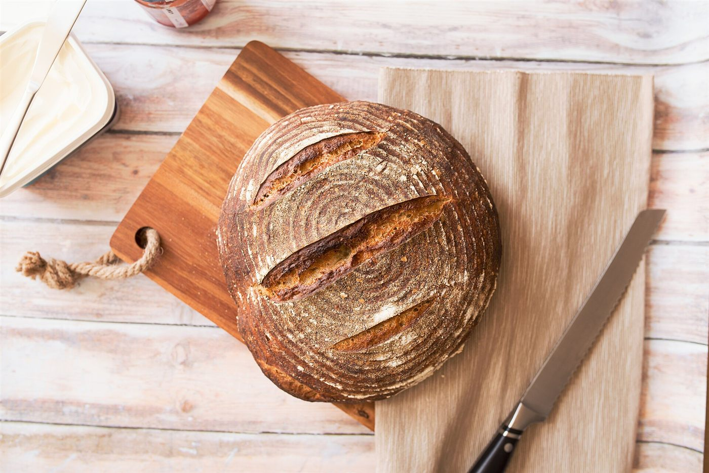
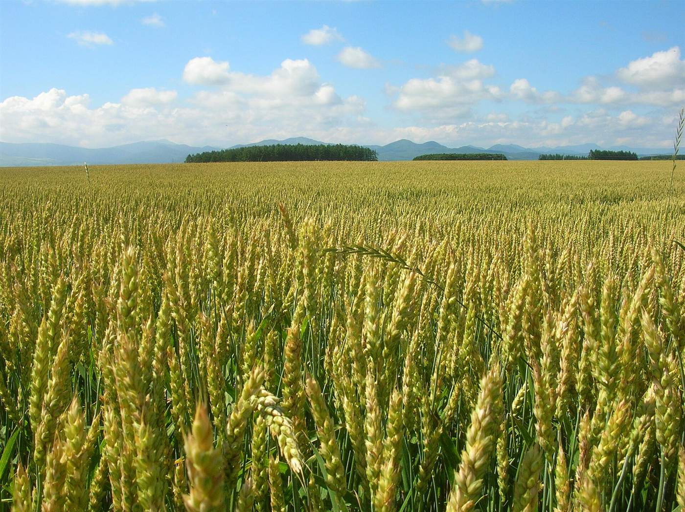
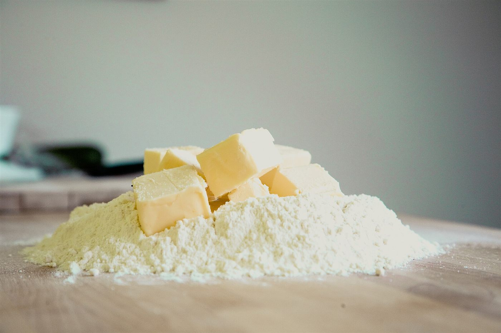
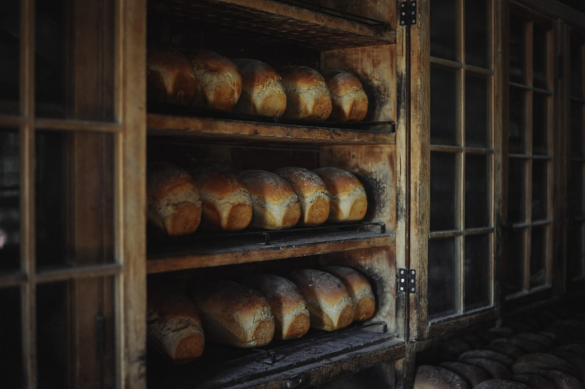
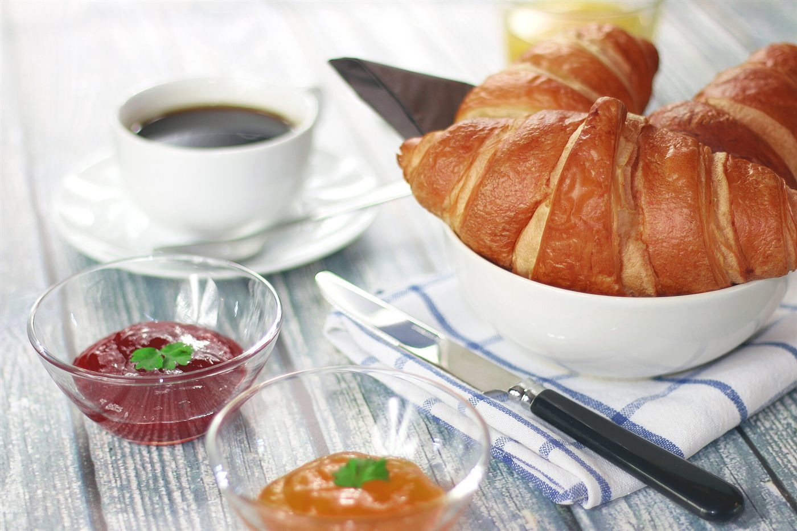
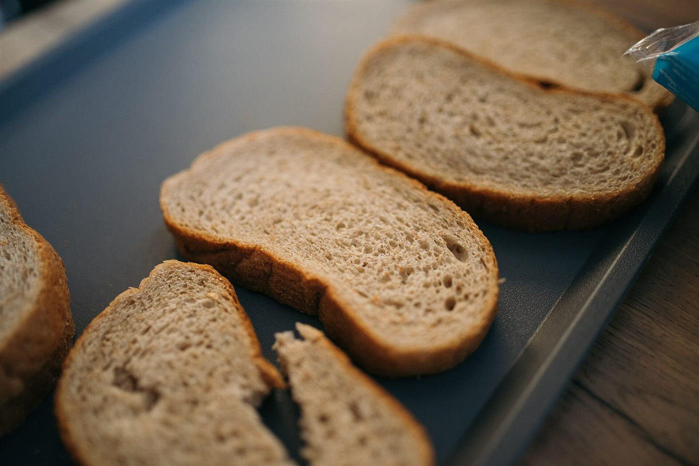

商品
ただいま準備中です
商品の詳細は準備中(お問い合わせください)です。ご来店前にお電話またはInstagramでご確認ください。
- 商品ラインナップ
- 準備中(お問い合わせください)
- 価格
- 準備中(お問い合わせください)
イメージ写真
以下はパン屋さんの一般的なイメージ写真です。当店の商品ではありません。






パン屋さんの楽しみ方
朝ごはんに、おやつに、旅のおともに。パン屋さんには、そんな楽しみ方があります。
※一般的なイメージです。当店の商品内容を示すものではありません。